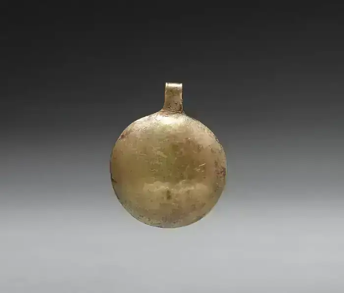

The site
Chavín de Huántar is a ceremonial centre in the Peruvian Andes, occupied from about 900 BC. Its stone carvings show composite beings — human and feline and serpent — with fangs, snakes for hair, and bodies that transform into one another. The most famous is the Lanzón, a granite monolith in an internal gallery.
Maps, diagrams and images


The evidence
The site's galleries are a maze of narrow corridors with channels for water and air, which would have produced sound and light effects for anyone inside. Archaeological work has found remains of psychoactive plants, including the San Pedro cactus, in contexts associated with ritual.
The interpretation — that Chavín's authority rested on altered states, engineered acoustics and visionary art — is now mainstream, and it is an argument about ritual practice rather than about contact with anything else.
Documented: the carvings, the galleries, and the psychoactive plant remains.
Supported: ritual use of altered states, and engineered sensory effects.
Interpreted: the iconography as visionary rather than descriptive.
Not established: the details of the ritual.
The label: documented — a case where the strange imagery has an evidenced explanation.
Why it is in the archive
Because it is the counter-example to the ancient-astronaut pages: visionary art that turns out to be about vision, and the archaeology says so.
Open resources on this topic
- PapersOpen-access articles: DOAJ · PubMed Central · Internet Archive Scholar
- BooksPublic-domain and borrowable copies: Open Library · Project Gutenberg · Google Books · Internet Archive
Cite this page
Momin, S. (2026). Chavín's Psychedelic Gods. The Larger World Archive. https://drsamonline.github.io/LARGE_GLOBE/chavin-gods.htmlMomin, Sohil. “Chavín's Psychedelic Gods.” The Larger World Archive, 2026, https://drsamonline.github.io/LARGE_GLOBE/chavin-gods.html.Momin, Sohil. “Chavín's Psychedelic Gods.” The Larger World Archive, 2026. https://drsamonline.github.io/LARGE_GLOBE/chavin-gods.html.@misc{chavns2026chavin,
author = {Momin, Sohil},
title = {Chavín's Psychedelic Gods},
year = {2026},
howpublished = {The Larger World Archive},
url = {https://drsamonline.github.io/LARGE_GLOBE/chavin-gods.html},
note = {Last reviewed 20 November 2026}
}Last reviewed 20 November 2026 · Corrections policy · this page is not peer reviewed
Sources for this page
- Wikipedia, “Chavín de Huántar” — the site and its arten.wikipedia.org
- Wikipedia, “Chavín culture” — the wider cultureen.wikipedia.org
- Wikipedia, “Lanzón” — the monolithen.wikipedia.org
- Wikipedia, “Echinopsis pachanoi” — the cactus found at the siteen.wikipedia.org